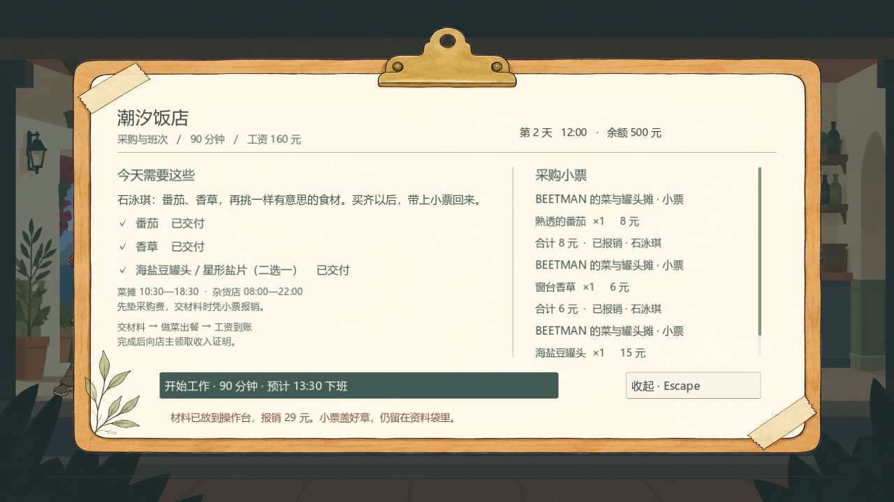
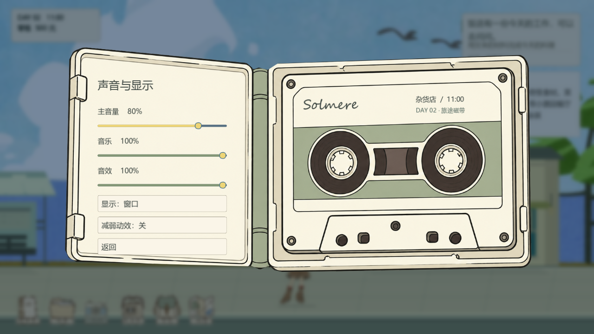
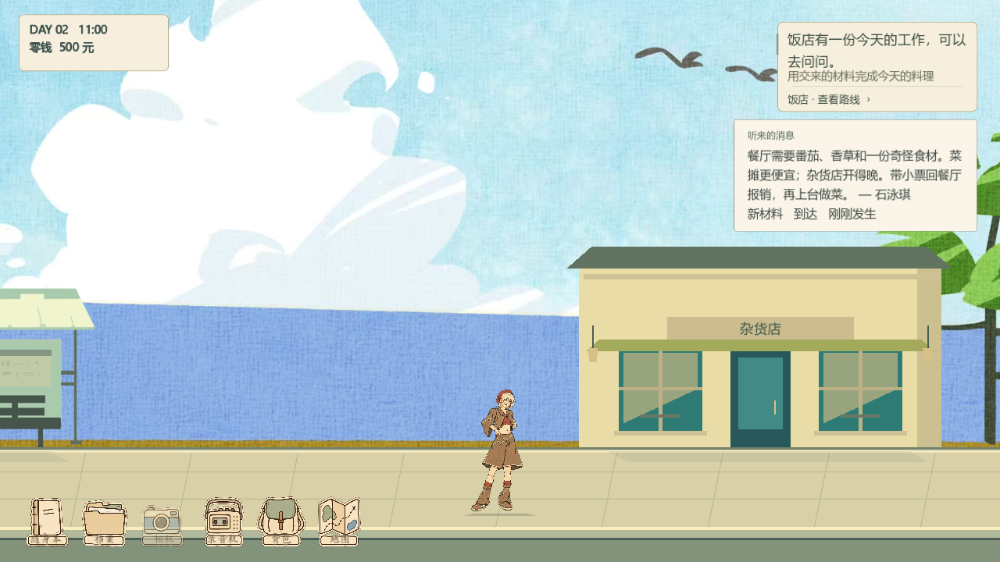
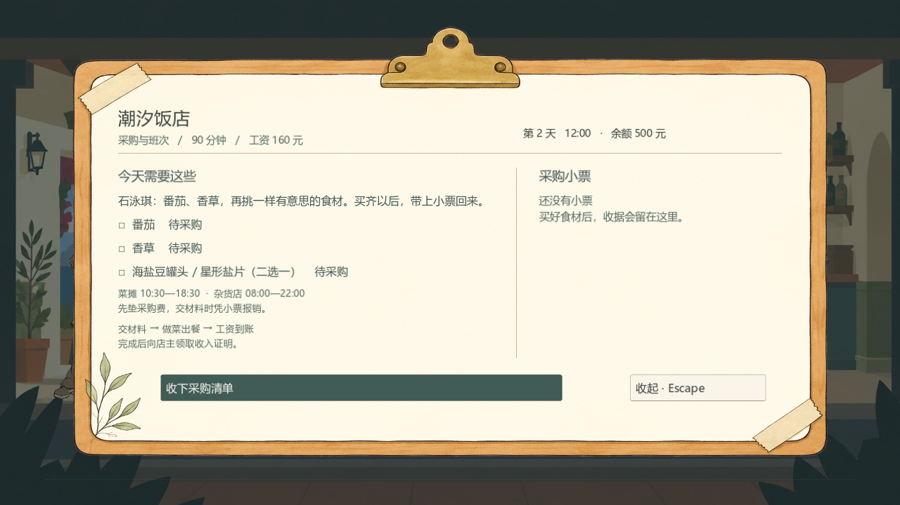

以下为当前 Godot 可玩版本的实机截图。底图已去除粉紫色背景，保留米白、浅木色和低饱和灰绿。
源码检查 160 项，打包版本检查 52 项，均通过；已在 Windows 游戏窗口中验证暂停与设置。

清单、小票分栏；班次时间、工资和开始工作按钮保持可见。

米白与灰绿，文字在标签内，音量和显示控件连接真实设置。
继续、设置、保存和返回主菜单使用同一个磁带收纳盒。

左上显示时间与零钱，六件随身物品放在左下，右下保留场景操作。

空清单也有明确的操作入口。
960 × 540 窗口下仍可使用采购及开始工作按钮。